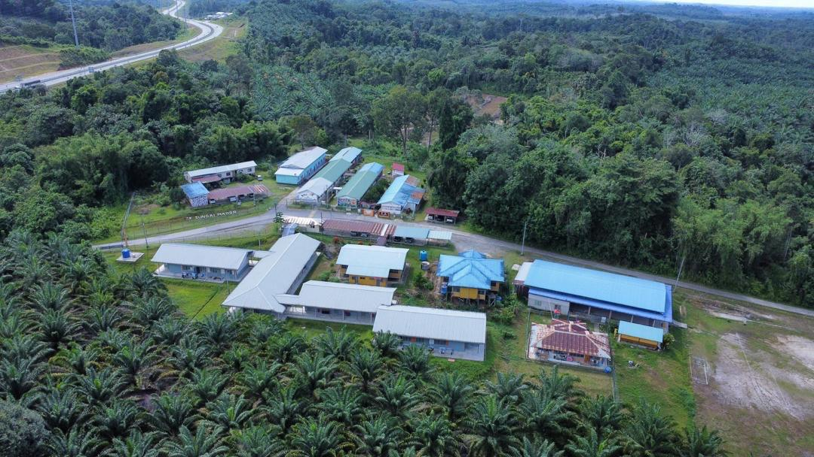

Profil sekolah
Sekolah Kebangsaan Sungai Mador
[PROFIL SEKOLAH] Masukkan pengenalan ringkas SK Sungai Mador di sini. Contohnya lokasi sekolah, sejarah ringkas, komuniti setempat, keunikan sekolah serta perkembangan sekolah dari semasa ke semasa.